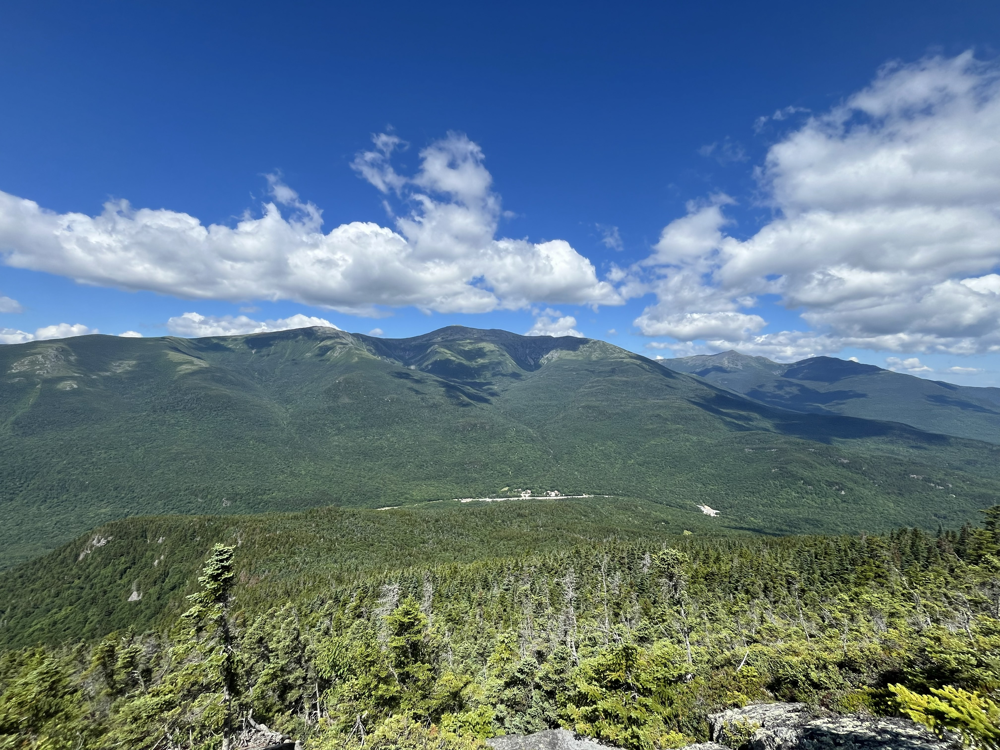
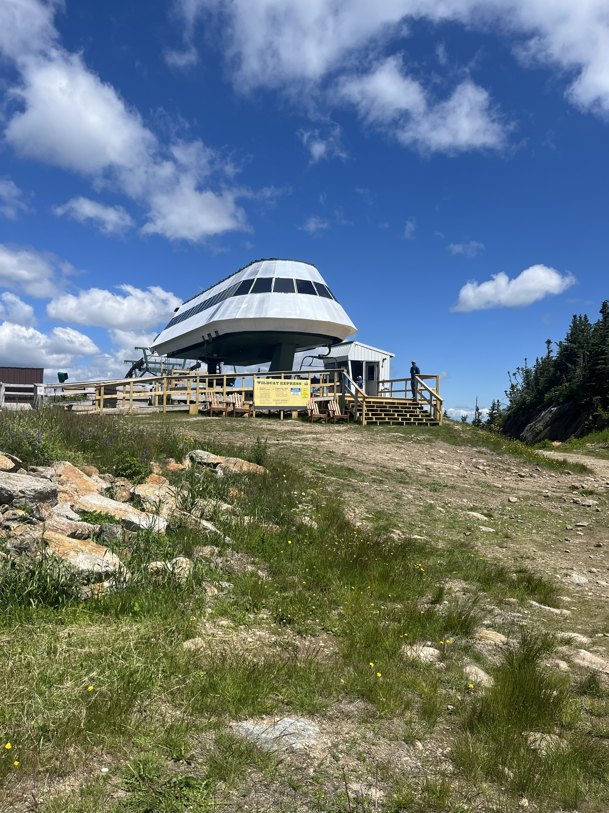
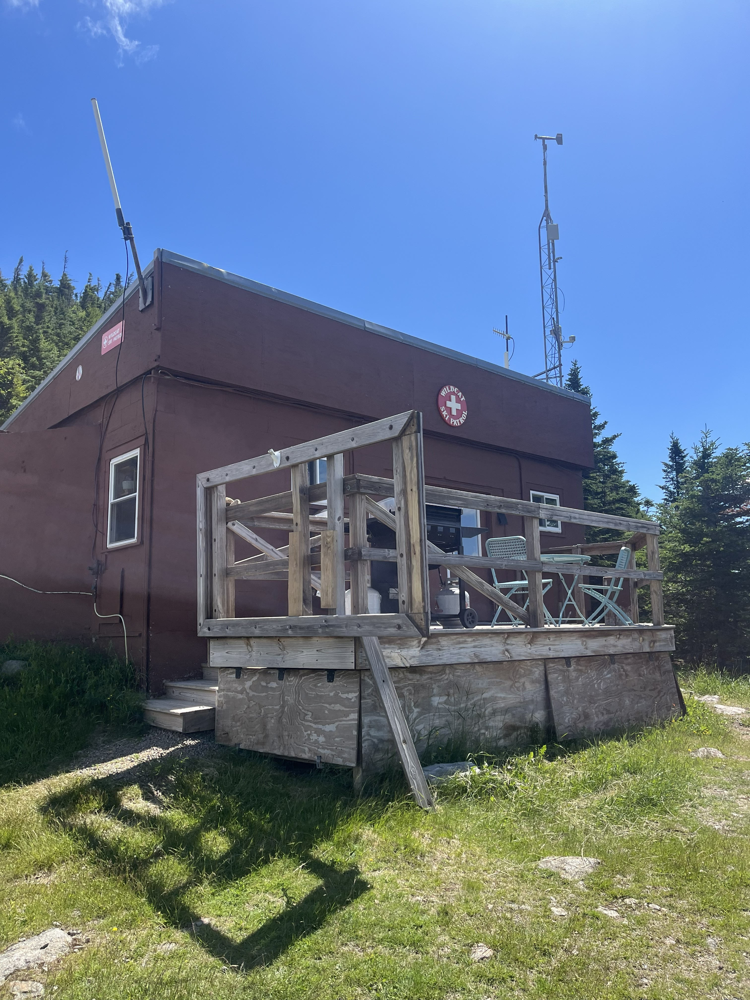

I am working on hiking all 48 4000-foot mountains in New Hampshire. I have been working on this since 2020.
Currently, I have hiked 42 out of the 48 mountains. Here is a list of the mountains that I have left and their elevations:
I plan to add pictures to this section.

My brother and I hiked Wildcat Mountain on July 12. Because we brought two cars, we were able to hike it point-to-point, going up Wildcat Ridge Trail and down Nineteen Mile Brook Trail.



It was cool to see the Wildcat Mountain ski lift and ski patrol just before the first peak. Some other hikers took the trail up and the lift down. (smart!)
After we finished the Wildcats and descended the trail to the Carter Hut, we were rewarded with an awesome view of Wildcat D over the pond.